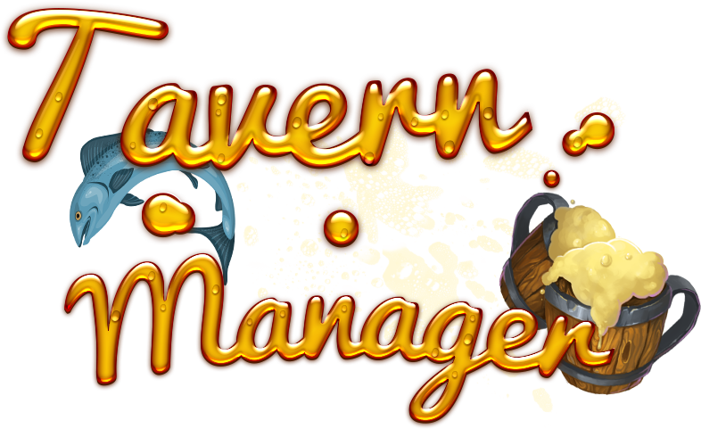

<header class="mb-2 ">
    <nav class="navbar navbar-expand-lg navbar-dark bg-brown">
        <div class="container-fluid">
            <a class="navbar-brand w-50" [routerLink]="['/']"  >
                
            </a>
            <button class="navbar-toggler" type="button" data-bs-toggle="collapse" data-bs-target="#navbarNavAltMarkup" aria-controls="navbarNavAltMarkup" aria-expanded="false" aria-label="Toggle navigation">
                <span class="navbar-toggler-icon"></span>
            </button>
            <div class="collapse navbar-collapse justify-content-end" id="navbarNavAltMarkup">
                <div class="navbar-nav  ">
                    <a class="nav-link" (click)="logout()" [routerLink]="['/']" >Déconnexion</a>
                    <a class="nav-link" >Paramètre</a>
                </div>
            </div>
        </div>
    </nav>
</header> 